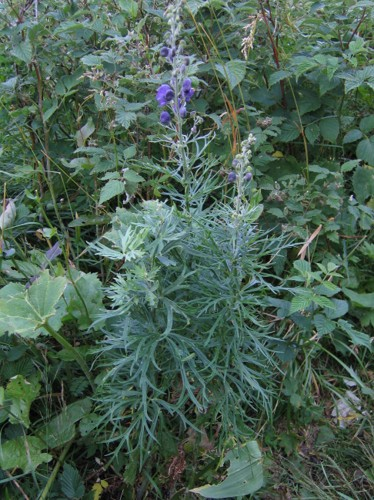
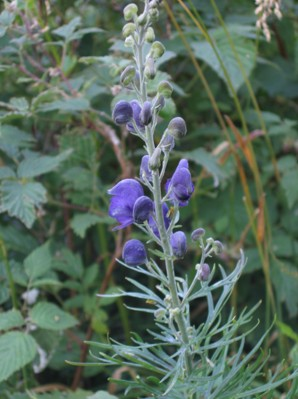

Le Buron du Tournel se niche au cœur d'estives riches d'une biodiversité remarquable. Voici quelques espèces emblématiques que l'on peut observer autour du site.


Noms communs: Casque-de-Jupiter, Capuchon-de-Moine, Tue-chien, Char-de-Vénus, Herbe-de-Saint-Jean Plante la plus dangereuse d’Europe, 3cm de n’importe quel morceau de la plante contient la dose pour tuer un adulte. Se trouve dans les sillons humides.
Au printemps, les prairies alentour se couvrent de ce narcisse blanc au cœur jaune bordé de rouge, reconnaissable à son parfum délicat. Il fleurit en abondance entre mai et juin, tapissant les pentes environnantes.